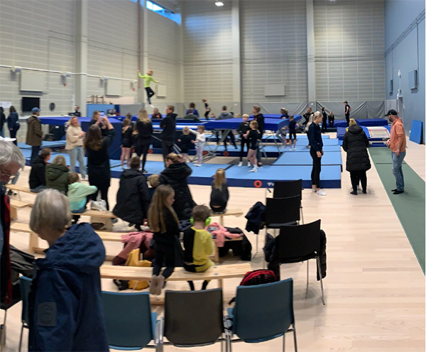

SACRO är en sektion i Sjövalla Frisksportklubb och står för Sjövallas acrobater. Vi har träningsgrupper inom gymnastikgrenen trampolin från nybörjare upp till elitnivå. Från hösten 2021 håller vi till i vår nybyggda hall i Mölnlycke fabriker.

-
Guld silver brons på Svenska cupen
2024-03-13
9-10 mars var det dags för årets första svenska cup i Upplands Väsby. Efter ett… Läs mer:
-
SACROSKUTTET GALLERI
2024-02-06
Hela 35 Sacro-gymnaster hade anmält sig till Sacroskuttet plus några från fler klubbar. Så otroligt… Läs mer:
-
Vårtermin 2024
2024-01-14
Dags för en ny termin och den 3:e februari arrangerar Sacro en regionstävling i vår… Läs mer
-
Hugo på ”VM” i Birmingham
2023-12-02
Hugo har varit i Birmingham med landslaget och tävlade i WAGC, motsvarande VM i åldersindelning.… Läs mer
-
Regionstävling Lidköping
2023-12-02
Lördagen den 25 nov var hela 15 hoppare från Sacro i Lidköping och deltog… Läs mer